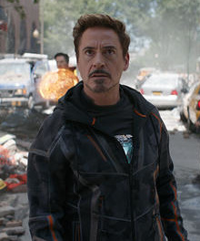

I did it for my family. I did it for the patients we DO help. The math works out if you don't get sentimental.
Walter's verdict on Therac-25: The machine cures thousands of cancer patients a year. A handful of incidents are tragic, but the aggregate good is enormous. Recall costs $40M and slows treatment for everyone in the queue. The rational, utilitarian move is to ship the software patch quietly, advise operators of the timing issue, and keep the machines running. He started as a chemist who took a small shortcut. He ended as the danger himself. The Therac engineers walked that path one rationalization at a time.

I had my eyes opened. I came to realize I had more to offer this world than making things that blow up.
Tony's verdict on Therac-25: Stark Industries made weapons that killed Americans. When Tony saw what he had built, he shut down the weapons division, took the personal financial hit, and rebuilt from first principles. That is the engineering posture for the Therac-25 team after the first overdose at Kennestone: stop production, recall every unit, restore the hardware interlocks, publish the failure analysis, and rebuild trust through visible accountability. The cost is real. So is the cost of the next patient on the table.